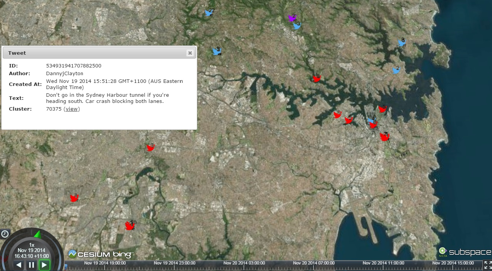
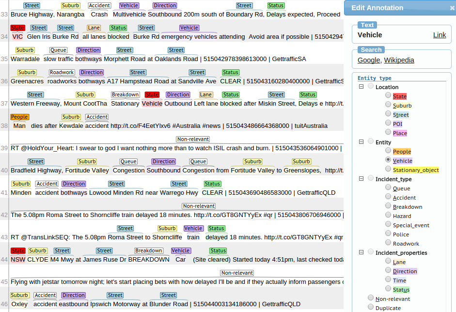
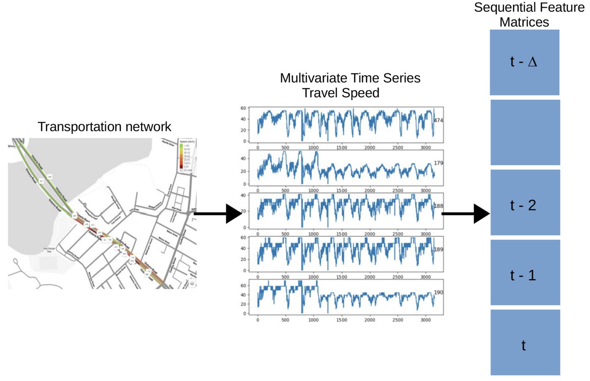
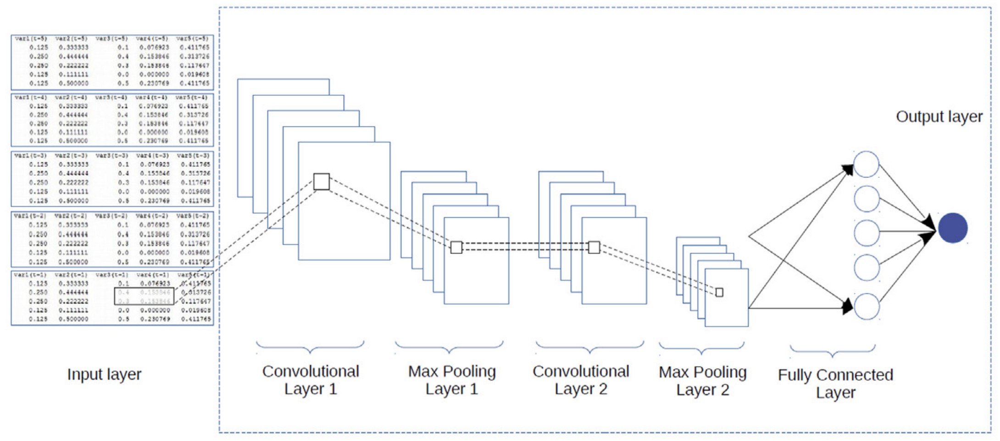
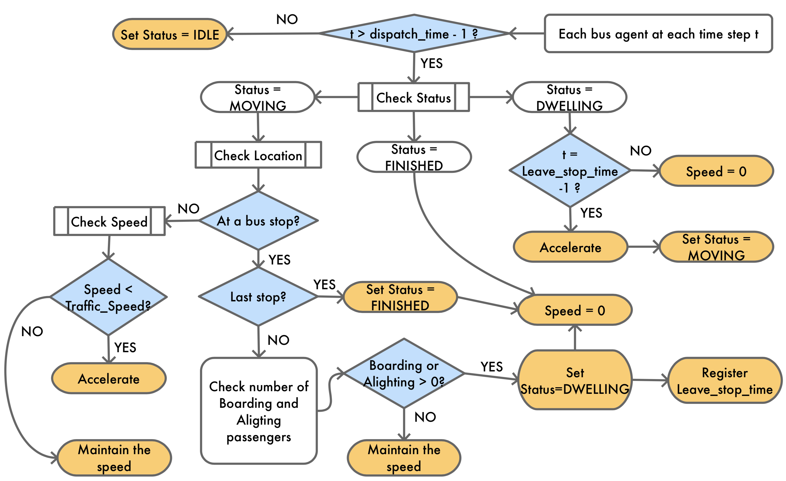
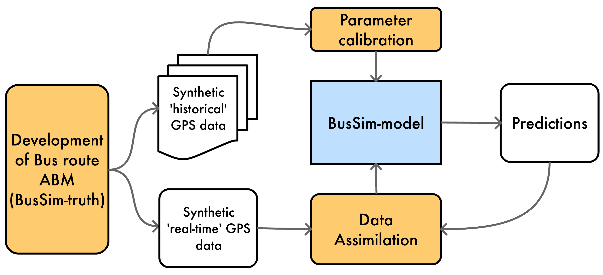

CDRC Data Partner Forum
21st May, University of Leeds
Data-driven cities: bring together machine learning and big data
Minh Kieu
Leeds Institute of Data Analytics, University of Leeds
These slides:
https://leminhkieu.github.io/p/2019-CDRC-Forum.html
Acknowledgements
Luke Archer & Kevin Minors, Data Science Interns, Leeds Institute for Data Analytics
Jon Ward, School of Mathematics
Nick Malleson, School of Geography
Alison Heppenstall, School of Geography
Christoforos Anagnostopoulos, Jonathan Coello, and others at Improbable.
Reponsive policy making
The growing uncertainty in cities are forcing urban policy makers to make faster, more frequent and shorter-term decisions.
Big Data supports this reponsive policy making practice
TrafficWatch in New South Wales, Australia
Automatic Annotation for TrafficWatch
Spatial Segmentation of Public Transport Passengers using Smart Card data
Spatial feature: Home location
Behavioural features:
Frequency of use.
Train usage.
Randomness of travel behaviour.
Frequency of transfers.
Classical clustering algorithms (K-means, Hierachical Clustering, etc.)

Affinity Propagation algorithm

Clusters of frequency passengers within a walking distance

How data science can help you beat traffic congestion

Data processing
Deep Learning prediction model
Challenges to city simulation
Extremely complex systems
Interactions between individuals are key
Aggregate models are unsuitable
"Computationally convenient".
But cannot capture non-linear, complex systems.
Unprecendented access to data about individuals (Big Data)
Bus Simulation
BusSim Flowchart
Uncertainty
The reality is dynamic: Non-linear models predict near future well, but diverge over time.
The reality is stochastic: No set of parameters would perfectly explain the real system.
There is no systematic mechanism to incorporate new data into agent-based models
Solution: Data Assimilation

Try to improve estimates of the true system state by combining:
Noisy, real-world observations
Model estimates of the system state
Ensemble Kalman Filter (EnKF)
Data Assimilation on Bus Simulation
Bus Simulation with a Particle Filter
Dynamic City Simulation: What Next?
Short-term
Bus simulation with real GPS and Smart Card data - applications to real cities
Crowd simulation and Data Assimilation - computationally feasible?
Medium-term
Emulation of a crowd simulation model - to make agent-based models more useful
Simulations of larger systems - high streets, villages, towns
Integrate disparate models (e.g. microsimulation, population projections ... )
Long-term
Real-time, dynamic simulation of an urban area - part of a digital twin
Could transform the way that cities are managed
For more information about what we're doing
Data Assimilation for Agent-Based Models (dust)
Main aim: create new methods for dynamically assimilating data into agent-based models.
Uncertainty in agent-based models for smart city forecasts
Developing methods that can be used to better understand uncertainty in individual-level models of cities
Bringing the Social City to the Smart City
https://alisonheppenstall.co.uk/research/bringing-the-social-city-to-the-smart-city/